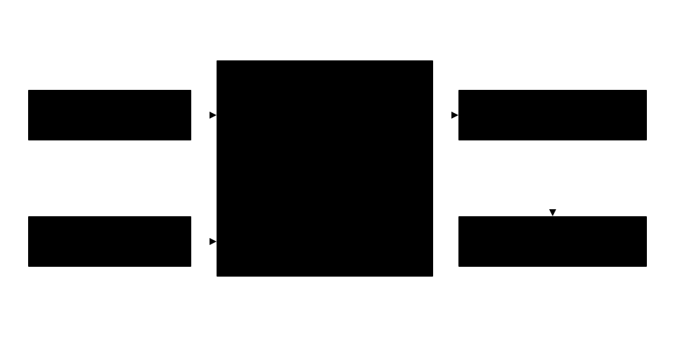

Learning surrogate models for computational fluid dynamics
Ph.D. research in the SmartDATA Lab: learned surrogates that stand in for expensive CFD solvers, judged on stability, physical consistency, and generalization.
Neural operatorsMesh graph networksPhysics-informed trainingLatent dynamics